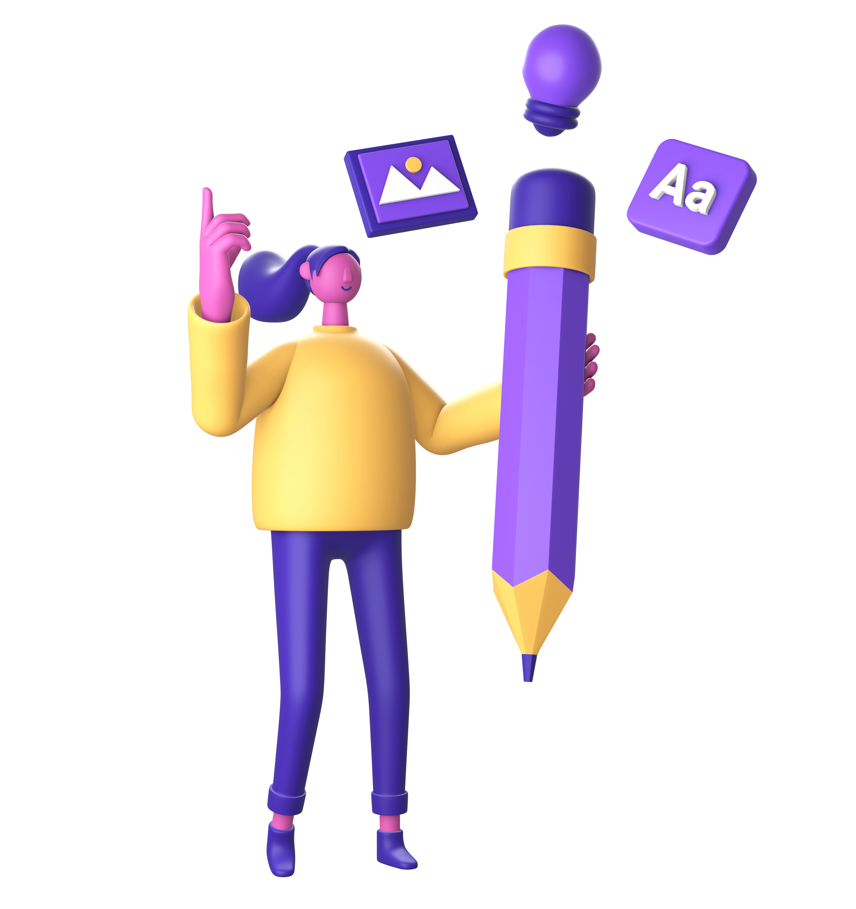
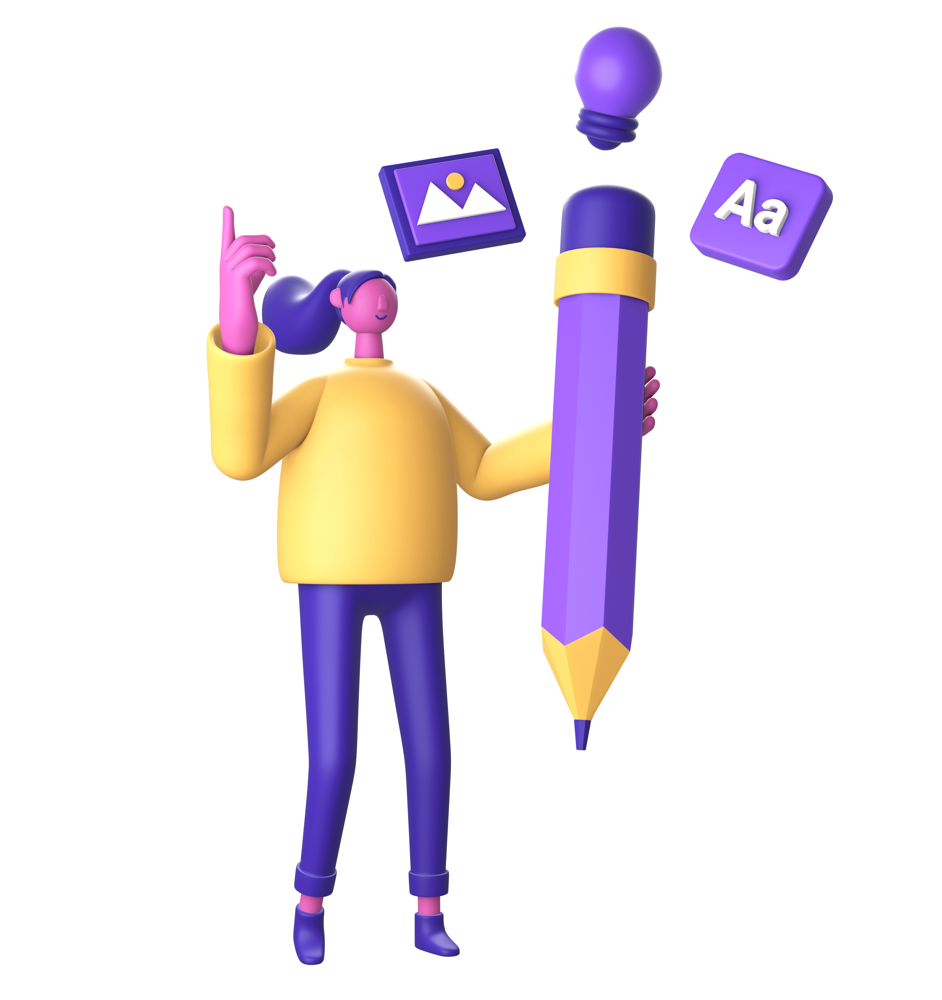

Popular Course!🎉
Back-End

UI-UX
Learning and Training atau biasa disebut LnT adalah salah satu fasilitas unggul dari BNCC dimana anggota akan mendapatkan pelatihan software dalam pengembangan technical skill mereka dengan materi-materi yang beragam dan disesuaikan dengan kebutuhan di dunia kerja nantinya. LnT ini diadakan secara rutin setiap seminggu sekali.
• Materi Terstruktur & Up-to-Date
• Pembelajaran Praktis dengan menggabungkan teori dengan praktik langsung
• Diajarkan oleh mentor yang ahli dan berpengalaman di bidangnya.
• Mendapatkan sertifikat serta pengalaman yang dapat dimasukkan dalam portofolio.
• Membuka peluang networking dengan mahasiswa dan profesional IT.
Back-End
UI-UX
